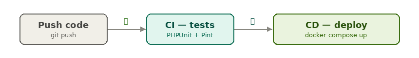
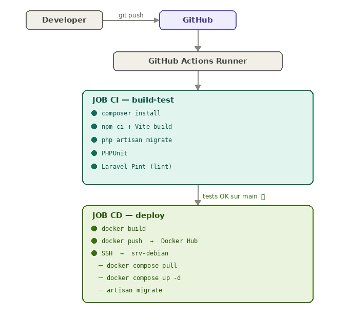
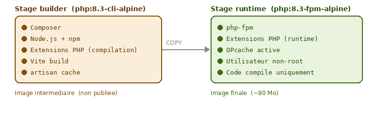
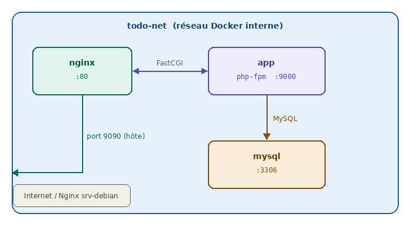
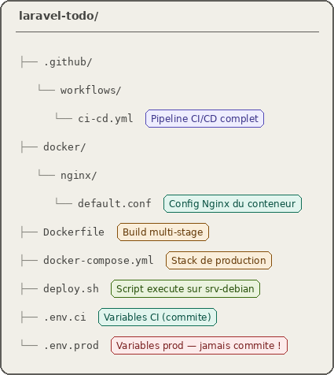
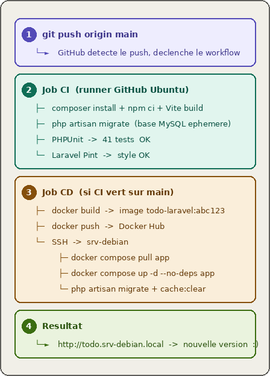

Architecture par étudiant 🎯 Chaque étudiant fork ou crée son repo dans lyceesaintsauveur. Dans son ci-cd.yml il configure des secrets spécifiques à son repo : Secret Elouan Alexandre Mael NGINX_PORT909090919092 APP_URLhttp://todo-elouan.srv-debian.localhttp://todo-alexandre.srv-debian.localhttp://todo-mael.srv-debian.local DOCKERHUB_USERNAMEcommun ou persocommun ou persocommun ou perso
CI - Déploiement⚓︎
Objectifs 🎯 CI/CD d'une application Laravel avec Docker 🚀
- Comprendre le principe d'une chaîne CI/CD
- Écrire un
Dockerfilemulti-stage pour une application Laravel - Décrire le rôle de chaque service dans un
docker-compose.ymlde production - Configurer un pipeline GitHub Actions de bout en bout
- Déployer automatiquement une application sur un serveur Debian via un self-hosted runner
Compétence : Mettre à disposition des utilisateurs un service informatique > Déployer un service
1. Rappels — Qu'est-ce que la CI/CD ? 🔄⚓︎
1.1 Le problème sans CI/CD⚓︎
Sans automatisation, le cycle de vie d'une modification de code ressemble à ceci :
- Le développeur pousse son code
- Quelqu'un (peut-être personne) lance les tests manuellement
- Quelqu'un d'autre construit l'application et la dépose sur le serveur "à la main"
- En cas d'erreur en production, personne ne sait exactement quelle version tourne
Ce processus est lent, risqué et non reproductible.
1.2 CI — Intégration Continue⚓︎
L'Intégration Continue (CI — Continuous Integration) automatise la vérification du code à chaque modification :
- Compilation / installation des dépendances
- Linting (vérification du style de code)
- Tests unitaires et fonctionnels
- Analyse statique
Pourquoi appelle-t-on ça intégration continue ?
Parce que le code de chaque développeur est intégré (fusionné) fréquemment dans la branche principale, et à chaque intégration, la chaîne vérifie que rien n'est cassé. Sans CI, on intègre rarement et les conflits s'accumulent.
1.3 CD — Déploiement Continu⚓︎
Le Déploiement Continu (CD — Continuous Deployment) prolonge la CI : si tous les tests passent sur la branche principale, l'application est automatiquement déployée en production.

Quelle est la différence entre CI et CD ?
La CI s'arrête à la vérification (les tests passent-ils ?). La CD va plus loin : elle déploie automatiquement si la CI est verte. Les deux ensemble forment la chaîne CI/CD.
1.4 Le quality gate⚓︎
Un quality gate (portillon qualité) est une condition bloquante dans le pipeline : si les tests échouent, le déploiement ne se déclenche pas. C'est la garantie que ce qui part en production a été validé.
Dans notre pipeline, c'est le mécanisme needs: build-test dans GitHub Actions :
deploy:
needs: build-test # ← le CD attend que le CI soit vert
if: github.ref == 'refs/heads/main'
Que se passe-t-il si un développeur pousse du code qui casse un test ?
Le job build-test échoue, GitHub envoie une notification par e-mail, et le job deploy ne démarre jamais. La production reste sur la version précédente, stable.
2. Architecture de notre chaîne CI/CD 🏗️⚓︎

Les acteurs⚓︎
| Acteur | Rôle |
|---|---|
| GitHub | Forge Git, héberge le code source et les secrets |
| GitHub Actions | Moteur CI/CD, exécute les jobs dans des conteneurs Ubuntu |
| Docker Hub | Registry d'images Docker, stocke l'image de l'application |
| srv-debian | Serveur de production, exécute les conteneurs via docker compose |
Pourquoi passer par Docker Hub plutôt que de builder l'image directement sur le serveur ?
Construire l'image sur le serveur de production serait risqué et lent. En passant par Docker Hub, on sépare la construction du déploiement : le runner CI construit l'image dans un environnement propre et contrôlé, la pousse sur Docker Hub, et le serveur n'a plus qu'à la télécharger. Si la construction échoue, le serveur n'est jamais touché.
3. Le Dockerfile — Conteneuriser Laravel 🐳⚓︎
3.1 Pourquoi pas php artisan serve en production ?⚓︎
artisan serve est le serveur de développement de Laravel. Il est :
- Mono-thread : il ne peut traiter qu'une requête à la fois
- Non optimisé : pas de gestion du cache OPcache
- Non sécurisé : pas conçu pour être exposé à internet
En production, on utilise php-fpm (FastCGI Process Manager), qui gère un pool de processus PHP en parallèle, associé à Nginx qui sert les fichiers statiques directement.
Qu'est-ce que FastCGI ?
FastCGI est un protocole de communication entre un serveur web (Nginx) et un interpréteur de langage (php-fpm). Nginx reçoit la requête HTTP, la transmet à php-fpm via le socket FastCGI, php-fpm exécute le script PHP et renvoie la réponse à Nginx, qui la retourne au client.
3.2 Le build multi-stage⚓︎
Un Dockerfile multi-stage utilise plusieurs images successives dans le même fichier. L'intérêt est de séparer l'environnement de construction (qui a besoin de compilateurs, de Node.js, de Composer…) de l'environnement d'exécution (qui n'a besoin que du runtime PHP).

Pourquoi l'image finale est-elle plus légère ?
Parce que le stage runtime ne copie que le résultat du build (le code + vendor/ + public/build/), pas les outils qui ont servi à le construire. Node.js, Composer, les headers de compilation (*-dev) ne sont pas inclus. Une image de production légère est plus rapide à télécharger, à démarrer, et présente une surface d'attaque réduite.
3.3 Analyse du Dockerfile⚓︎
# ── Stage 1 : builder ──────────────────────────────────────────
FROM php:8.3-cli-alpine AS builder
# Installation des dépendances système nécessaires à la compilation
RUN apk add --no-cache \
libpng-dev libjpeg-turbo-dev libwebp-dev \
libxml2-dev oniguruma-dev icu-dev \
&& docker-php-ext-install pdo_mysql mbstring xml gd fileinfo intl
# Composer installé depuis son image officielle (propre)
COPY --from=composer:2 /usr/bin/composer /usr/bin/composer
# Node.js pour Vite
RUN apk add --no-cache nodejs npm
WORKDIR /app
# On copie TOUT le code source (artisan doit être présent pour
# les scripts post-install de Composer)
COPY . .
# Installation des dépendances PHP sans les packages de dev
RUN composer install --no-dev --no-interaction \
--optimize-autoloader --prefer-dist
# Build des assets front (Vite génère public/build/manifest.json)
RUN npm ci && npm run build
# Optimisations Laravel : mise en cache des routes, vues, config
RUN php artisan config:cache \
&& php artisan route:cache \
&& php artisan view:cache
# ── Stage 2 : runtime ──────────────────────────────────────────
FROM php:8.3-fpm-alpine AS runtime
# Extensions compilées + suppression des headers dans la même couche
RUN apk add --no-cache \
libpng-dev libjpeg-turbo-dev libwebp-dev \
libxml2-dev oniguruma-dev \
&& docker-php-ext-install pdo_mysql mbstring xml gd fileinfo opcache \
&& apk del libpng-dev libjpeg-turbo-dev libwebp-dev \
libxml2-dev oniguruma-dev \
&& rm -rf /var/cache/apk/*
# OPcache : accélère PHP en gardant le bytecode en mémoire
RUN { \
echo 'opcache.enable=1'; \
echo 'opcache.memory_consumption=256'; \
echo 'opcache.validate_timestamps=0'; \
} > /usr/local/etc/php/conf.d/opcache.ini
# Sécurité : l'application tourne sous un utilisateur non-root
RUN addgroup -g 1000 -S www && adduser -u 1000 -S www -G www
WORKDIR /var/www/html
# Copie du code compilé depuis le stage builder
COPY --from=builder --chown=www:www /app .
# Création des dossiers d'écriture Laravel
RUN mkdir -p storage/framework/{sessions,views,cache} storage/logs \
bootstrap/cache \
&& chown -R www:www storage bootstrap/cache \
&& chmod -R 775 storage bootstrap/cache
USER www
EXPOSE 9000
CMD ["php-fpm"]
Pourquoi supprimer les packages -dev dans la même couche Docker (RUN) qu'on les installe ?
Chaque instruction RUN crée une couche (layer) dans l'image. Si on installe les -dev dans une couche et qu'on les supprime dans une autre, les fichiers supprimés existent toujours dans la couche précédente — ils sont juste masqués. L'image finale est donc aussi lourde. En regroupant installation + suppression dans un seul RUN, les fichiers n'apparaissent jamais dans l'image finale.
Pourquoi créer un utilisateur www et ne pas utiliser root ?
Par principe de moindre privilège. Si un attaquant parvient à exécuter du code dans le conteneur, il se retrouve avec les droits de l'utilisateur www, non de root. Il ne peut pas modifier les fichiers système du conteneur ni, en cas de fuite, accéder à l'hôte avec des droits élevés.
4. Le docker-compose.yml — Stack de production 🧩⚓︎
4.1 Les trois services⚓︎
Notre application de production nécessite trois conteneurs qui collaborent :

| Service | Image | Rôle |
|---|---|---|
app |
Notre image Laravel | Exécute php-fpm, traite les requêtes PHP |
nginx |
nginx:1.27-alpine |
Sert les fichiers statiques, passe le PHP à app |
mysql |
mysql:8.0 |
Base de données, données persistées dans un volume |
4.2 Points clés du docker-compose.yml⚓︎
Les variables d'environnement sont injectées depuis le fichier .env.prod qui reste sur le serveur et n'est jamais commité :
app:
environment:
APP_KEY: ${APP_KEY}
DB_PASSWORD: ${DB_PASSWORD}
Le healthcheck sur MySQL garantit que la base est prête avant que l'application démarre :
mysql:
healthcheck:
test: ["CMD", "mysqladmin", "ping", "-h", "127.0.0.1"]
interval: 10s
retries: 10
Les volumes nommés assurent la persistance des données entre les redéploiements :
volumes:
todo_mysql: # données MySQL
todo_storage: # fichiers uploadés, sessions, logs Laravel
Que se passerait-il si on n'utilisait pas de volumes nommés pour MySQL ?
À chaque docker compose up, MySQL démarrerait avec une base vide. Toutes les données des utilisateurs seraient perdues. Les volumes nommés sont indépendants du cycle de vie des conteneurs : on peut recréer le conteneur MySQL sans perdre les données.
Pourquoi nginx et app sont-ils deux conteneurs séparés plutôt qu'un seul ?
Séparation des responsabilités. Nginx est optimisé pour servir des fichiers statiques (CSS, JS, images) très rapidement, sans jamais invoquer PHP. Seules les requêtes .php sont transmises à php-fpm. Cela soulage considérablement l'application et respecte le principe de séparation des préoccupations (Separation of Concerns).
5. Le pipeline GitHub Actions 🤖⚓︎
5.1 Structure du fichier ci-cd.yml⚓︎
Un fichier GitHub Actions est un workflow au format YAML, placé dans .github/workflows/. Il décrit :
- Les déclencheurs (
on:) — quand le pipeline s'exécute - Les jobs — les groupes d'étapes
- Les steps — les actions individuelles
on:
push:
branches: [main] # déclenché uniquement sur main
pull_request:
branches: [main] # et sur les PR vers main
5.2 Le job CI — build-test⚓︎
Ce job s'exécute sur un runner Ubuntu hébergé par GitHub. Il :
- Clone le repo (
actions/checkout@v4) - Installe PHP 8.3 avec les extensions nécessaires
- Installe les dépendances Composer et npm
- Build les assets Vite
- Lance les migrations sur une base MySQL éphémère
- Exécute PHPUnit
- Vérifie le style de code avec Laravel Pint
services:
mysql:
image: mysql:8.0
env:
MYSQL_DATABASE: todo_test
MYSQL_USER: laravel_test
MYSQL_PASSWORD: secret
Où tourne cette base MySQL pendant le CI ?
Elle tourne dans un conteneur de service Docker, lancé automatiquement par GitHub Actions le temps du job. Elle est complètement éphémère : créée au début du job, détruite à la fin. Chaque exécution du pipeline repart d'une base propre.
5.3 Le job CD — deploy⚓︎
Ce job ne se déclenche que si le job CI est vert ET qu'on est sur la branche main :
deploy:
needs: build-test # quality gate
if: github.ref == 'refs/heads/main'
&& github.event_name == 'push'
Self-hosted runner
Le job CD s'exécute sur runs-on: self-hosted — un runner GitHub Actions installé directement sur srv-debian. Il se connecte à GitHub, attend les jobs, et les exécute localement sur le serveur. Pas besoin de SSH ni d'IP publique : le runner est déjà sur la machine cible.
GitHub ←── runner srv-debian (connexion sortante)
C'est la solution retenue pour notre infrastructure car srv-debian est sur un réseau local privé non accessible depuis internet.
Il réalise trois opérations :
1. Build et push de l'image Docker
- name: Build and push Docker image
uses: docker/build-push-action@v5
with:
push: true
tags: |
sofaugeras/todo-laravel:latest
sofaugeras/todo-laravel:${{ github.sha }}
L'image est taguée avec latest (pour le déploiement) ET avec le SHA du commit (pour la traçabilité — on peut toujours savoir quelle version exacte tourne).
2. Déploiement direct sur le serveur
Puisque le runner tourne sur srv-debian, le déploiement s'exécute directement sans SSH :
- name: Deploy
run: |
cd /opt/todo-laravel
sed -i "s|^IMAGE_TAG=.*|IMAGE_TAG=${{ github.sha }}|" .env.prod
cp .env.prod .env
docker compose pull app
docker compose up -d --no-deps app
docker compose exec -T app php artisan migrate --no-interaction --force
docker compose exec -T app php artisan cache:clear
Pourquoi --no-deps dans docker compose up ?
Sans --no-deps, docker compose up app redémarrerait aussi tous les services dont app dépend (mysql, nginx). Avec --no-deps, seul le conteneur app est recréé. MySQL et Nginx restent actifs — les utilisateurs connectés ne perdent pas leur session.
Qu'est-ce qu'un secret GitHub et comment fonctionne-t-il ?
Un secret est une valeur chiffrée stockée dans les paramètres du repo GitHub (Settings → Secrets). Elle est injectée comme variable d'environnement dans les runners pendant l'exécution du pipeline, mais n'apparaît jamais dans les logs (GitHub la masque automatiquement). C'est le mécanisme sécurisé pour stocker des informations sensibles comme les tokens Docker Hub.
Pourquoi le runner est-il enregistré sur l'organisation et pas sur un repo ?
Un runner d'organisation (lyceesaintsauveur) est accessible par tous les repos de l'organisation. Chaque étudiant peut ainsi utiliser le même runner srv-debian13 depuis son propre repo, sans qu'on ait besoin de l'enregistrer manuellement sur chaque projet.
6. Les secrets GitHub 🔐⚓︎
Notre pipeline nécessite 3 secrets à configurer dans Settings → Secrets and variables → Actions du repo (ou au niveau de l'organisation) :
| Secret | Valeur | Pourquoi |
|---|---|---|
DOCKERHUB_USERNAME |
Votre identifiant Docker Hub | S'authentifier pour pousser l'image |
DOCKERHUB_TOKEN |
Token Docker Hub (pas le mdp) | Authentification sécurisée |
DOCKERHUB_IMAGE |
votre-user/todo-laravel |
Nom de l'image à builder et pousser |
Plus besoin de secrets SSH
Avec le self-hosted runner, le job CD s'exécute directement sur srv-debian. Les secrets SSH_HOST, SSH_USER, SSH_PRIVATE_KEY et SSH_PORT ne sont plus nécessaires — le runner est déjà sur le serveur.
Pourquoi utiliser un token Docker Hub plutôt que le mot de passe du compte ?
Si le token est compromis, on peut le révoquer sur Docker Hub sans changer le mot de passe du compte. C'est le principe des credentials à portée limitée : le token n'a accès qu'aux opérations nécessaires (push d'images), pas à la gestion du compte.
7. Nginx comme reverse proxy 🔀⚓︎
Nginx (prononcé "engine-x") est un logiciel open source qui joue plusieurs rôles selon la configuration :
- Serveur web — sert directement les fichiers statiques (HTML, CSS, JS, images) sans passer par PHP
- Reverse proxy — reçoit les requêtes HTTP et les transmet à une application backend (PHP-FPM, Node.js, Flask…)
- Load balancer — répartit le trafic entre plusieurs instances d'une même application
- Cache — mémorise les réponses pour accélérer les requêtes répétées
7.1 L'analogie du switch Layer 7 🔌⚓︎
Imaginez Nginx comme un switch réseau intelligent qui opère au niveau applicatif (couche 7 du modèle OSI) — il ne se contente pas de router des paquets IP, il lit le contenu HTTP (URL, en-têtes, nom de domaine) pour décider où envoyer la requête.
| Concept Nginx | Analogie réseau | Exemple concret |
|---|---|---|
server {} |
Un port d'écoute du switch | listen 80; server_name api.example.com; |
location {} |
Une règle de routage sur ce port | location /api { } → backend API |
proxy_pass |
La règle de forwarding | Requête transmise vers http://app:9000 |
root |
Servir depuis le cache local | Sert directement les fichiers HTML/CSS |
Nginx reçoit les requêtes, les route selon les règles, et les forward vers le bon backend ou les sert directement depuis le disque.
7.2 Deux niveaux de Nginx dans notre architecture 🏗️⚓︎

Nginx à deux endroits
Dans notre architecture, Nginx intervient à deux niveaux distincts :
1. Nginx bare-metal sur srv-debian — installé directement sur le serveur, hors Docker.
Il écoute sur le port 80 et fait du reverse proxy vers les conteneurs selon le sous-domaine
(todo.srv-debian.local → port 9090). Un seul Nginx gère tous les projets du serveur.
2. Nginx dans le conteneur — à l'intérieur de la stack Docker Todo, un conteneur Nginx
dédié reçoit les requêtes forwardées par Nginx bare-metal et les distribue : il sert les assets
Vite directement (sans PHP), et transmet les requêtes .php à php-fpm via FastCGI.
7.3 Nginx dans le conteneur⚓︎
À l'intérieur de la stack Docker, le conteneur Nginx a une configuration différente : il sert les fichiers statiques directement et passe les requêtes PHP à php-fpm via FastCGI :
location / {
try_files $uri $uri/ /index.php?$query_string;
}
location ~ \.php$ {
fastcgi_pass app:9000; # "app" = nom du service Docker
fastcgi_param SCRIPT_FILENAME $realpath_root$fastcgi_script_name;
include fastcgi_params;
}
Comment Nginx sait-il joindre le conteneur app par son nom ?
Docker crée un réseau interne (todo-net). Dans ce réseau, chaque conteneur est accessible par son nom de service. app:9000 est résolu par le DNS interne de Docker vers l'adresse IP du conteneur app, port 9000.
Pourquoi deux Nginx et pas un seul ?
Le Nginx bare-metal est le point d'entrée unique du serveur — il sait vers quel projet router selon le nom de domaine. Le Nginx conteneur est interne à la stack Todo — il optimise la livraison des assets sans toucher à php-fpm. Ce sont deux responsabilités différentes : routage inter-projets d'un côté, optimisation intra-application de l'autre.
8. Récapitulatif des fichiers du projet 📁⚓︎

Règle absolue
Le fichier .env.prod contient des mots de passe et des clés secrètes. Il ne doit jamais être commité sur GitHub. Il est créé manuellement sur le serveur lors de la mise en place de l'infrastructure.
9. Schéma de synthèse — Le cycle complet 🔁⚓︎

Combien de temps faut-il entre un git push et la mise en ligne ?
Sur notre configuration, environ 4 à 6 minutes : 2 à 3 minutes pour le CI (install + tests), 2 à 3 minutes pour le CD (build Docker + push + déploiement via self-hosted runner). Des optimisations comme le cache GitHub Actions pour les layers Docker et le cache Composer permettent de réduire ce temps.
Que se passe-t-il si le déploiement plante en cours de route ?
Le conteneur app qui tournait avant n'est remplacé que lorsque le nouveau démarre correctement. Si docker compose up -d app échoue (image corrompue, erreur de migration…), l'ancien conteneur continue de tourner. C'est une forme basique de déploiement sans interruption (zero-downtime deployment).
Pour aller plus loin 📚⚓︎
- Blue/Green deployment : maintenir deux environnements de production et basculer le trafic instantanément
- Rollback automatique : revenir à la version précédente si des erreurs sont détectées après déploiement
- Notifications : Slack, e-mail ou webhook en cas d'échec du pipeline
- Environnements de staging : déployer automatiquement sur un serveur de test avant la production
- Secrets management : HashiCorp Vault pour centraliser et auditer les secrets d'infrastructure